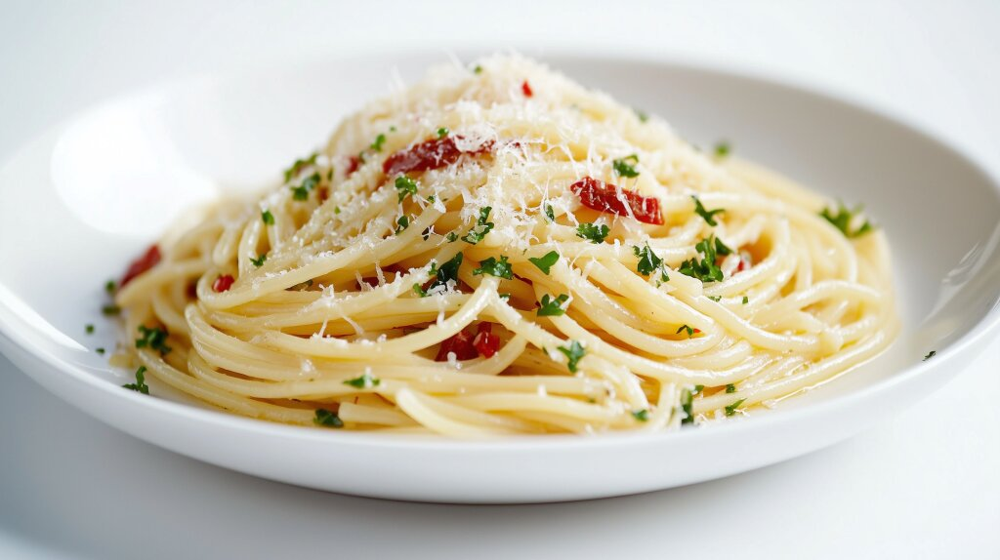

Spaghetti Aglio e Olio
Home

Description
A classic Italian pasta dish that’s simple, quick, and packed with bold flavor. Spaghetti aglio e olio is made with just a handful of ingredients - garlic, olive oil, and chili flakes - but the result is surprisingly rich and satisfying.
It’s a perfect go-to meal when you want something comforting and delicious without spending too much time in the kitchen.
Serves 4
Ingredients
- 400 g Spaghetti
- 6 cloves of Garlic (thinly sliced)
- 80 ml Olive Oil
- 1 teaspoon Red chili flakes (adjust to taste)
- 8 g of fresh Parsley (chopped)
- Salt (for pasta water and to taste)
- Black Pepper (to taste)
- 50 g Parmesan cheese
Steps
- Bring a pot of salted water to a boil and cook the spaghetti until al dente.
- While the pasta cooks, heat olive oil in a pan over medium heat.
- Add sliced garlic and cook until lightly golden (do not burn).
- Stir in chili flakes and cook briefly.
- Drain the pasta, reserving a small amount of pasta water.
- Add the pasta to the pan and toss to coat.
- Add a splash of pasta water if needed to loosen the sauce.
- Mix in parsley, salt, and pepper.
- Serve with grated Parmesan if desired.